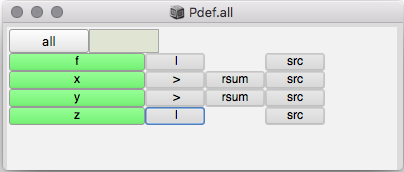

Table of Contents
1 Dark Matter Workshop
1.1 Sonify Particle Physics data using SuperCollider
First we need to set up the computer to run the necessary software.
- Download SuperCollider.
- Download Utopia and put it in the SuperCollider Extension folder, in MacOS this is ~/Library/Application Support/SuperCollider/Extensions (create it if not there).
- Download Dark Matter code here, and move the DarkMatterPatterns.scd file in Extensions folder.
After you have done all this restart SuperCollider.
1.2 Start Dark Matter software
Now that you have installed all the software in your computer, take a ride on how to sonify the data.
- Open Utopia Startup.scd in the SuperCollider IDE, which is found in the Dark Matter folder downloaded from the link above.
- Open Basic Set Up Solo.scd and run the first region enclosed in brackets, this will take some time.
- Then run the next region, if everything went alright you must now see a window with various representations of the data.
- Each line of value represents a different event, to select an event just click on it on the right of the window where all events are listed.
1.3 Start your engines
Open SynthDefs.scd file, load all the contents, this will open another window listing the players of the synths, to start one press Play! #+ Graphical User Interface for Pdef 
1.4 Initial guidelines
To explore the different events listed in the interface of the software, just select another event and see how this changes the sound.
If you want you can change the content of the Pdefs too, but be careful not to mess with control settings, such as amp (amplitude), cause this might yield in unexpected volume levels.
For example, this code snippet below provides access in the data using PjetS pattern, which in turn controls the frequency control of a synth.
Pdef(\vinty, Pbind(\instrument, \vint, \amp, 0.3, \freq, PjetS(Prand((0..9), inf), \pt).linlin(0, 1, 120.0, 220.0), \dur, Pconstituent(0, Prand([0, 2, 4], inf), \pt) * 0.1 + 0.1).trace);